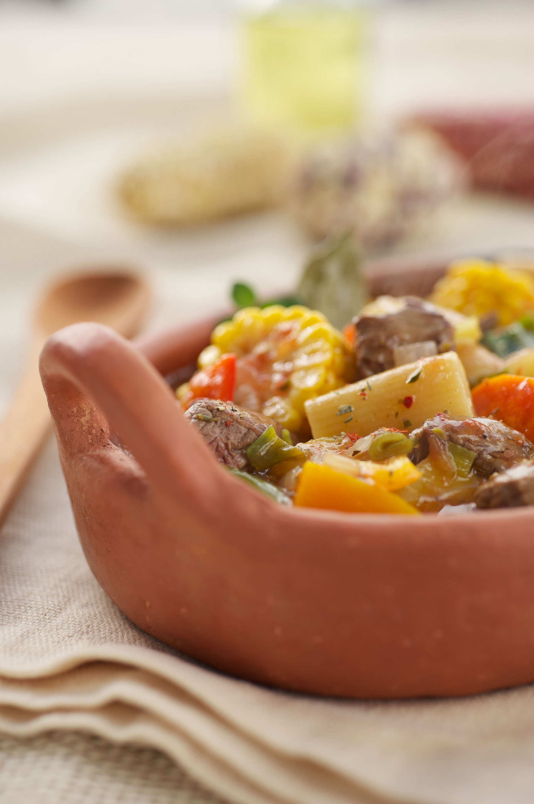

Recetas de Pescados - kiwilimon.com Encuentra y disfruta nuestras recetas de pescado con las que podrás deleitar tu paladar. Pescado a la florentina, pescado empapelado, bacalao navideño, paella de mariscos, son algunos ejemplos de lo que puedes encontrar.
Recetas ricas, rápidas, fáciles y originales | Knorr Descubrí nuestras recetas, son ricas, prácticas y fáciles de hacer. Con Knorr tus recetas quedan increíbles. Knorr, el auténtico sabor de lo hecho en casa.
Google Drive: Sign-in We would like to show you a description here but the site won’t allow us.
Innatia - Vida sana y tradiciones 2.4m Followers, 1,210 Following, 4,148 Posts - See Instagram photos and videos from Paulina Cocina - Recetas y eso (@paulinacocina)
Recetas para ocasiones especiales , caseras y fáciles- De ... Recetas de pollo. El pollo es un ingrediente sano y versátil con el que se pueden cocinar cientos de platos diferentes: guisado, al horno, en salsa, en croquetas, etc. Cuando hablamos de recetas de pollo nos vienen a la cabeza miles de preparaciones con diferentes ingredientes, salsas y guarniciones. Esto es lo bueno del pollo, que se puede preparar de mil maneras, siempre queda riquísimo ...
Recetas de pollo 216.4k Followers, 177 Following, 5,363 Posts - See Instagram photos and videos from Las Recetas de MJ (@lasrecetasdemj)
Gurmé: Recetas de cocina, bares y restaurantes de Sevilla Como hacer MERMELADA de TOMATE en THERMOMIX y otras recetas. Cómo hacer BIZCOCHO CEBRA paso a paso. POLLO a la CERVEZA al horno, a la olla, a la parrilla, plancha y disco. KEBAB en casa o A DOMICILIO. Manualidades Ver más. Cómo RECICLAR ROPA vieja y convertirla en nueva.
Las Recetas de MJ (@lasrecetasdemj) is on Instagram Recetas de Cocina Mexicana, platillos tipicos mexicanos, Pozole, Mole, Antojitos, Chiles y todo el sabor de México en las recetas de cocina de la Abuela
Paulina Cocina - Recetas y eso (@paulinacocina ... Recetas para ocasiones especiales 110 recetas Las mejores recetas para ocasiones especiales: Navidad, San Valetín… o ese día que invitas a comer a tu suegra y tienes que lucirte en la cocina. Con los mejores ingredientes, fotografías y explicaciones paso a paso para hacer sencillo lo que parece complicado.
Innatia - Vida sana y tradiciones
2021.04.19 19:22

Todo sobre las semillas de ALPISTE para consumo humano LIBRE de SILICA
¿Qué es la sílica y por qué es peligrosa? ¿Cuánta sílica contienen las semillas de alpiste? ¿Cuál es la cantidad máxima de sílica que se puede consumir sin riesgos? ¿Existen marcas de alpiste completamente libres de sílica? Encontrarás las respuestas en este artículo. Continúa
Novedades
Célebres
Frases de BENJAMIN FRANKLIN sobre la libertad, el dinero y más...
Cómo reciclar tela
Cómo RECICLAR ROPA vieja y convertirla en nueva
Astrología Gratis :: Curso
Cáncer con Ascendente en Aries: ¿cómo son en el amor, el trabajo y la salud?
Mascarillas caseras
Mascarillas para la piel grasa
Cáncer
Todo lo que necesitas saber sobre el NEUROBLASTOMA infantil
Materiales para velas
Cómo elegir los mejores PABILOS y RECIPIENTES para cada tipo de VELA
Pollo
POLLO a la CERVEZA al horno, a la olla, a la parrilla, plancha y disco
Alergias
Cuál es el mejor ANTIHISTAMINICO NATURAL
De parafina
¿Por qué las VELAS quedan rayadas? ¿Cómo hacer para que queden LISAS?
Abdomen
Ejercicios para PERDER BARRIGA en casa rápidamente
1 2 3 ... 679 Siguiente
Remedios Naturales Ver más
Todo sobre las semillas de ALPISTE para consumo humano LIBRE de SILICA
Todo lo que necesitas saber sobre el NEUROBLASTOMA infantil
Cuál es el mejor ANTIHISTAMINICO NATURAL
Ejercicios para PERDER BARRIGA en casa rápidamente
Belleza natural Ver más
Mascarillas para la piel grasa
4 Increíbles beneficios de las hojas de guayaba para el cabello
6 Increíbles usos de la flor de hibisco para el cabello
Mascarilla de orégano contra el acné
El Mundo del Té Ver más
Te de cedrón, ¿para qué sirve? Beneficios y contraindicaciones
Beneficios y contraindicaciones de la tila o tilo
Cómo preparar un té de cedrón o hierba luisa
Cómo preparar un té de manzanilla
Alimentos y Bebidas Ver más
Como hacer MERMELADA de TOMATE en THERMOMIX y otras recetas
Cómo hacer BIZCOCHO CEBRA paso a paso
POLLO a la CERVEZA al horno, a la olla, a la parrilla, plancha y disco
KEBAB en casa o A DOMICILIO
Manualidades Ver más
Cómo RECICLAR ROPA vieja y convertirla en nueva
Receta de jabón de glicerina y miel
Cómo elegir los mejores PABILOS y RECIPIENTES para cada tipo de VELA
¿Por qué las VELAS quedan rayadas? ¿Cómo hacer para que queden LISAS?
Crecimiento personal Ver más
Frases de BENJAMIN FRANKLIN sobre la libertad, el dinero y más...
Cómo diseñar un plan de acción eficaz, PLAN B
ABRAHAM LINCOLN, cazador de vampiros, las mejores frases
FRASES de ESPERANZA cortas y bonitas
Hogar: Casa y Familia Ver más
Depilación LASER y EMBARAZO: todo lo que necesitas saber
Qué es la movilidad articular y qué ejercicios hacer sin riesgos
El cuento de LOS 3 CERDITOS y el lobo feroz
Ejercicios para crecer 2 centímetros de estatura
Servicios Gratis Ver más
Cálculo de riesgo para enfermedad del corazón
Cómo combatir los picores de la piel
Qué trucos puedo usar para el dolor de cuello
Beneficios comprobados y sin comprobar del vinagre de manzana
Turismo y viajes Ver más
¿Qué es el senderismo?
Cataluña, región de fiestas y mercadillos
Castillo de San Miguel
Los mejores sitios para visitar en Granada con la familia
Medicina Natural Ver más
Qué es la fisioterapia
Cremas para Masajes
Biodescodificación de las hemorroides
Biodescodificación de la ansiedad y la depresión
Esoterismo Ver más
Cáncer con Ascendente en Aries: ¿cómo son en el amor, el trabajo y la salud?
Oraciones milagrosas y poderosas para casos muy difíciles, urgentes y desesperados
Oración de Juan Minero para el dinero y para recuperar un amor
¿Cómo es una persona de Virgo según su ascendente?
1 2 3 ... 679 Siguiente
Compras Ver más
Cuarzo
El cuarzo es uno de los minerales más comunes y resistentes. Ex
Sésamo
Semillas ricas en proteínas, fitoesteroles y ácidos grasos de
Radiofrecuencia
La radiofrecuencia, al igual que la cavitación, es una técnica
Aparatos para el cabello
En esta sección encontrarás aparatos para el cuidado y la bell
Amatista
La amatista es una variedad del cuarzo de color violeta, muy apr
Invitaciones
Tarjetas para invitar a tus fiestas de cumpleños, o bodas e inv
Licuadoras
En esta sección encontrarás todo tipo de licuadoras para licua
Batidoras
Una batidora es un electrocdoméstico que no puede faltar en tu
Agujas
Diferentes tipos de agujas para hacer tus labores de costura, bo
Aceite de jojoba
El aceite de jojoba es empleado casi exclusivamente para uso cos
Centella asiática
La centella asiática o gotu kola es una planta que se emplea en
Karite
La mantequilla de karite es el producto de los frutos del árbol
Sirope de arce o miel de maple
El jarabe o sirope de arce, también conocido como miel de maple
Espirulina
Los productos a base de alga espirulina ayudan a desintoxicar el
Zafiro
El zafiro es una gema preciosa de color azul intenso cuando es a
Alumbre
El alumbre se destaca por sus propiedades antisépticas y cicatr
Remedios Naturales
Adelgazar Adicciones Belleza Plantas Medicinales Salud Familia
Belleza natural
Belleza para... Trucos de belleza Cosmética Natural
Labores Bisutería Cómo decorar fiestas Trabajos manuales Jabones y velas
Crecimiento personal
Desarrollo personal Crecimiento laboral
Hogar: Casa y Familia
Organizar la casa Vida en familia
Servicios Gratis
Infografías
Turismo y viajes
Salud y belleza Trucos para viajar Mercados medievales Lugares sagrados
Medicina Natural
Acupuntura China Ayurveda Cromoterapia Fisioterapia Flores de Bach Medicina Tradicional China Musicoterapia Osteopatía Reiki Risoterapia Tai Chi Yoga
Esoterismo
Horóscopos Magias Mancias Videncias
Suscríbete
Al boletin
Los más leídos
170 Frases y estados para WhatsApp y Facebook Te de cedrón, ¿para qué sirve? Beneficios y contraindicaciones Beneficios y contraindicaciones de la tila o tilo Té de hojas de guanábana, ¿para qué sirve y cómo se prepara?